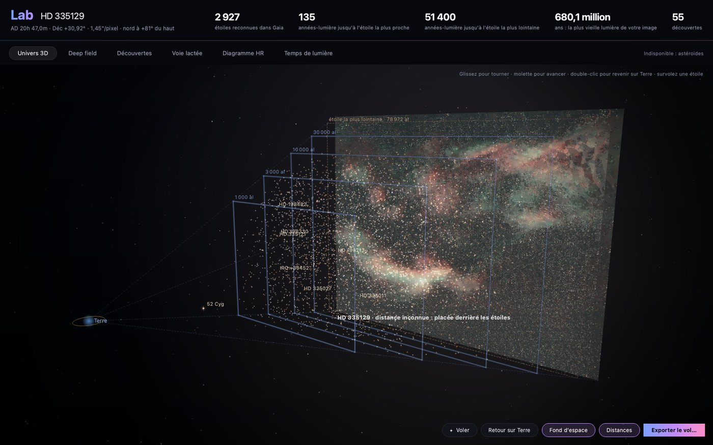
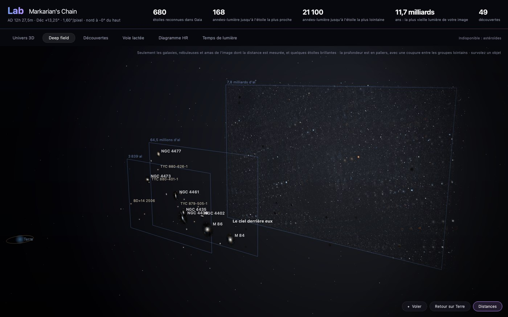
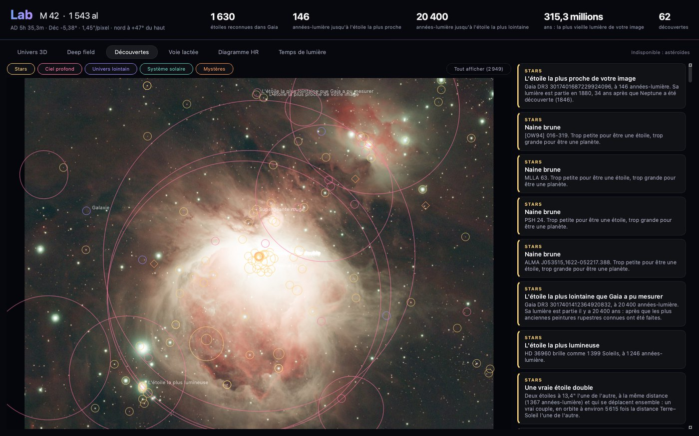
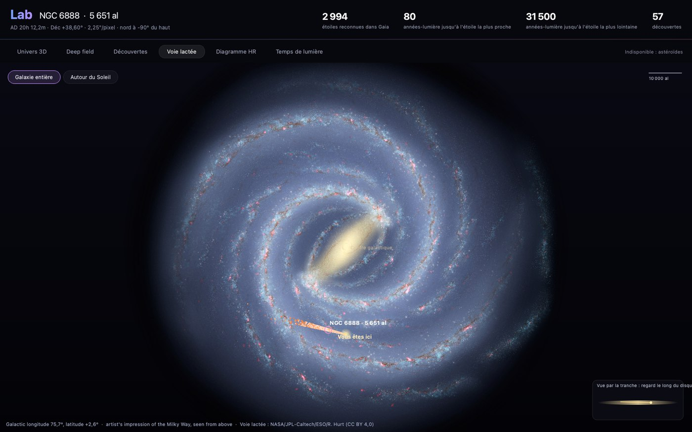
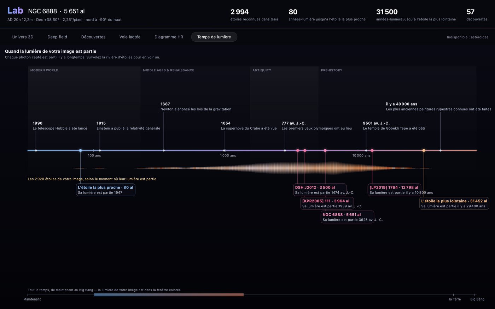
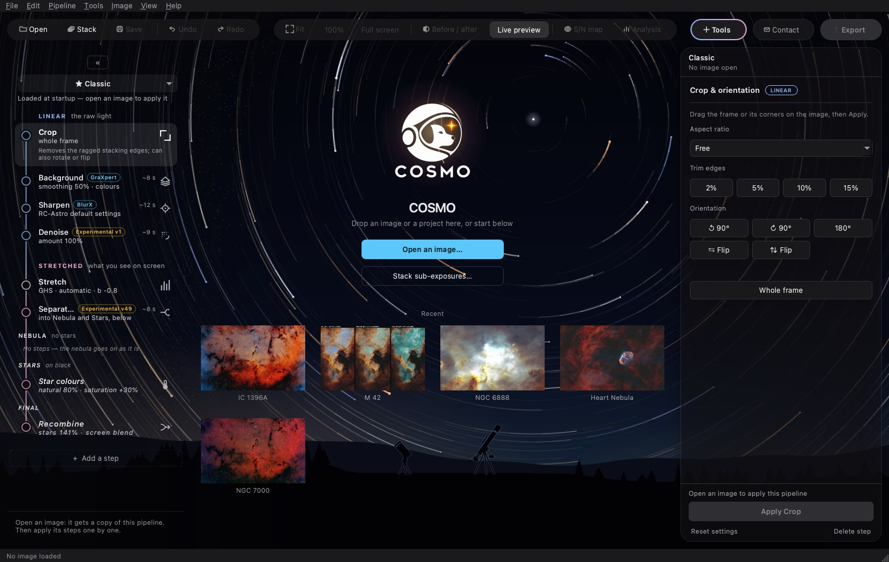
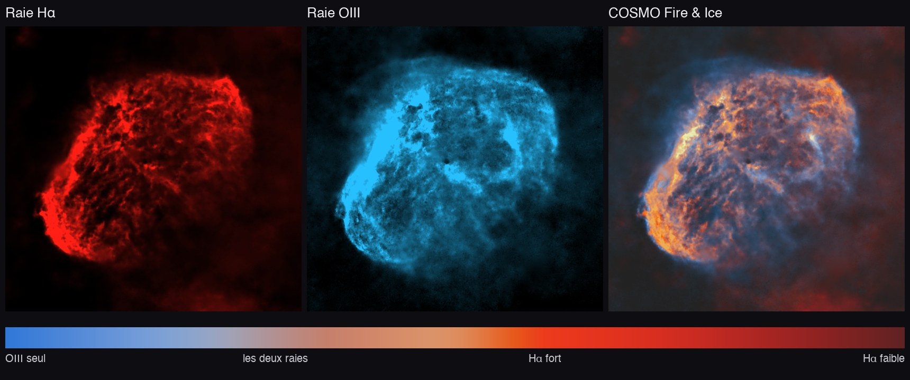
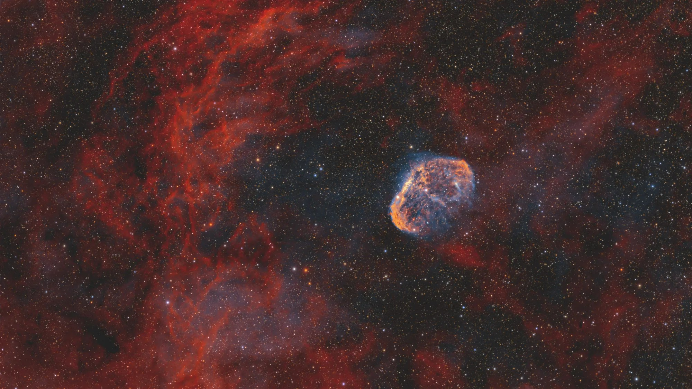

Nouveautés
Nouveautés
Ce qui change d'une version de COSMO à la suivante.
0.6.2
- COSMOStars v54 : la nébuleuse garde son relief après la séparation. Les versions précédentes l'avaient peu à peu lissé ; v54 garde environ 40 % de relief fin (3 à 8 pixels) en plus sur le Croissant, et les fins filaments des Dentelles ne sont plus retirés comme des étoiles.
- COSMODenoise v2 : entraîné sur des piles profondes face au même ciel avec beaucoup moins de pose. Moins de grain pour le même détail de nébuleuse que v1, et plus d'étoiles faibles gardées.
- Gaia et le Lab fonctionnent maintenant derrière un antivirus, un VPN ou un réseau d'entreprise qui inspecte les connexions sécurisées : COSMO fait confiance aux certificats auxquels votre ordinateur fait confiance. Si une connexion est encore refusée, le message dit pourquoi, au lieu de « il faut Internet ».
- En français, tous les réglages tiennent dans le panneau de droite : Stretch (GHS), Remove halo et Curves étaient coupés à droite. Les options longues passent maintenant sur deux lignes.
- Lab, univers 3D : votre galaxie ou nébuleuse reste nette quand la vue ne bouge plus ; elle ne devient plus floue et trop lumineuse dès qu'on s'arrête.
- Résolution de bugs mineurs.
0.6.0
- Le Lab (bouton à côté d'Analysis, ou Ctrl+L) place votre image dans l'univers. Univers 3D : les étoiles de votre image à leurs distances Gaia, dans l'espace profond, avec un court vol d'ouverture et un bouton Voler ; le vol peut être enregistré en vidéo ou en image animée. Deep field : les galaxies et nébuleuses de l'image à leurs distances mesurées (la chaîne de Markarian, à environ 60 millions d'années-lumière, et le ciel lointain derrière). Découvertes : ce que l'image contient sans qu'on pense à le chercher (l'étoile la plus proche, des naines brunes, de vraies étoiles doubles…), regroupé par sorte, avec Tout afficher. Voie lactée : où se trouve votre objet dans notre galaxie. Diagramme HR et Temps de lumière : quand la lumière de votre image est partie, face à l'histoire. Le Lab interroge Gaia, SIMBAD et SkyBoT ; seules les coordonnées de l'image sont envoyées.
- COSMO en français : le drapeau en haut change la langue (COSMO redémarre). Les noms des outils restent en anglais, tels qu'on les connaît ; les pipelines sont les mêmes fichiers dans les deux langues.
- Un seul outil Stars : Separate, Reduce ou Remove, au choix en haut de l'outil, au lieu d'outils séparés faciles à confondre.
- Une barre du haut compacte sur les petits écrans, et un écran d'accueil plus épuré : les panneaux latéraux n'apparaissent qu'une fois une image ouverte.
- Stack : les darks et flats dont la matrice de couleurs est écrite autrement (en minuscules ou avec un espace à la fin, comme certains fichiers SharpCap) sont acceptés.





0.5.0
- COSMOSharp v12 : des étoiles plus fines, aussi fines qu'avec BlurXTerminator à son réglage par défaut, et un réglage à part pour le détail de la nébuleuse. Toujours expérimental : une petite flammèche peut rester d'un côté des étoiles brillantes. Comparaison sur NGC 6888 ci-dessous.
- COSMOStars v49 : moins de restes d'étoiles après la séparation (sur NGC 6888, environ un tiers de petits points en moins).
- Separate stars ne laisse plus d'anneau à la place des grosses étoiles brillantes : le liseré que StarXTerminator et COSMOStars y laissent (plus net après Sharpen) est effacé, la lueur douce autour de l'étoile reste.
- HDR multiscale fait ressortir la structure d'un cœur brillant au lieu de seulement l'assombrir. Il marche maintenant au mieux sur l'image linéaire, juste avant Stretch (sur M 42 aux 50 % par défaut, environ 1,5 fois plus de détail dans le cœur, sa luminosité gardée) ; sur une image étirée, le détail suit la baisse du cœur. Force par défaut : 50 %. Un nouveau bouton Preview stretched montre l'image linéaire telle que ton Stretch la rendra : on voit ce qu'apporte HDR pendant qu'on bouge les curseurs.
- Un nouvel écran d'accueil : un ciel de nuit avec des filés d'étoiles qui tournent autour de l'étoile Polaire, un smart télescope et une lunette sur l'horizon ; vos images récentes s'affichent en vignettes. Les panneaux sont un peu transparents, sur l'accueil comme avec une image.
- Un écran de démarrage avec la version, un mot sur les réseaux expérimentaux (avec une licence RC-Astro, mieux vaut l'utiliser) et un merci aux soutiens, avec le lien Ko-fi. On peut le désactiver.
- Pipeline Classic : il sépare maintenant les étoiles après l'étirement, leur rend leurs couleurs naturelles et les remet ; la partie nébuleuse vous est laissée libre. Reset, dans le menu des pipelines, vide le pipeline pour construire le vôtre.
- Bouton Contact, en haut : copie contact@cosmo-astro.com, pour signaler un problème ou écrire. Le nom de l'image affiche l'objet (IC 1396A) avec le fichier dessous, et COSMO s'ouvre sur tout l'écran.

 BlurXTerminatorCOSMOSharp v12
BlurXTerminatorCOSMOSharp v12

0.4.1
- Corrigé : Stack échouait tout à la fin, à l'enregistrement, avec des poses qui ne nomment pas leur filtre (« FITS header values must contain standard printable ASCII characters »).
- Stretch, départ automatique : le point noir se place maintenant juste sous les zones les plus sombres de l'image. Une nébuleuse qui remplit le cadre (IC 1396) ne sort plus en voile laiteux uniforme ; sur un champ ordinaire, rien ne change.
- L'avertissement sur un ciel de couleur non neutre propose maintenant Background avec Remove gradients décoché quand la nébuleuse remplit le cadre.
0.4.0
- COSMO Fire & Ice, la nouvelle palette par défaut de Narrowband palette : OIII en bleu, Hα en rouge, puis orange et jaune quand il s'éclaire. Ajustée sur une pile de la Draco traitée à la main (écart de couleur 0,029 sur toute l'image) ; là où les deux raies sont fortes, l'OIII compte moins, donc plus de blanc uni (NGC 6888 : 2,1 % du croissant presque blanc avant, moins de 0,1 % maintenant). Il ne reste que trois palettes : COSMO Fire & Ice, HOO, SHO, sur des vignettes plus grandes.
- Protect the sky (Narrowband palette) : retire l'OIII faible du fond ; pousser l'OIII ne fait plus de taches bleues dans le ciel.
- Star colours, première étape de Stars après une séparation : rend aux étoiles d'une pile bi-bande leurs couleurs naturelles, d'après le catalogue Gaia quand le fichier dit où pointait le télescope (651 étoiles reconnues sur NGC 7000), avec un curseur Saturation.
- COSMOStars v47 remplace v44 : sur la même pile de test de NGC 6960, 129 restes d'étoiles par mégapixel au lieu de 418, et moins d'étoiles laissées sur la nébuleuse brillante ; la petite pointe laissée au centre d'une étoile retirée est effacée.
- Calibration dans la fenêtre Stack : bias, darks, flats et dark flats, trouvés dans le dossier ou choisis à la main ; un fichier seul est pris comme maître tout fait. Les poses calibrées dans l'appareil (Seestar) n'en ont pas besoin.
- Plein écran (F, Échap pour sortir) à n'importe quelle étape ; un aperçu lent affiche maintenant sa progression.
- Corrigé : un cœur d'étoile poussé au-dessus de 1 par COSMOSharp faisait diviser toute l'image par NoiseXTerminator, et le ciel devenait noir à l'étirement.


0.3.3
- COSMOStars v44 remplace v36 : sur une pile de test de NGC 6960 accentuée et débruitée avant la séparation, 418 restes d'étoiles par mégapixel au lieu de 2100. La couleur sous les étoiles brillantes est raccordée : plus de tache grise après une palette.
- Run up to <étape>, en bas du panneau des étapes : applique dans l'ordre les étapes qui restent avant l'étape choisie.
- Nouvelles versions : COSMO signale qu'une version plus récente est publiée (au plus une fois par jour, désactivable dans Help).
- Windows : installation par utilisateur sans droits d'administrateur, une version portable .zip, et une nouvelle version s'installe par-dessus la précédente.
- Corrigé : une étape de Nebula ou Stars ajoutée après Recombine n'arrivait pas dans l'image finale ; les bulles d'aide apparaissaient comme des rectangles blancs vides.
0.3.0
- COSMO : l'application ne porte plus le nom « Darkroom ».
- COSMOSharp, COSMODenoise, COSMOStars : les trois réseaux maison ont un nom et sont marqués Experimental, déconseillés pour une image finale. Les moteurs RC-Astro restent utilisables depuis votre installation.
- Narrowband palette : deux palettes en dégradé, Red, yellow and blue (la nouvelle palette par défaut) et Red, gold and blue.
0.2.0
- Narrowband palette : fausses couleurs pour les piles bi-bande (SHO, HOO, Foraxx…), choisies sur une planche contact de l'image.
- Soft star cores : le bord dur d'une étoile brillante se fond dans son halo.
0.1.0
- Première version avec installateurs pour macOS et Windows : Stack (standard, HDR automatique, comète) et les outils de traitement de l'image linéaire et étirée.